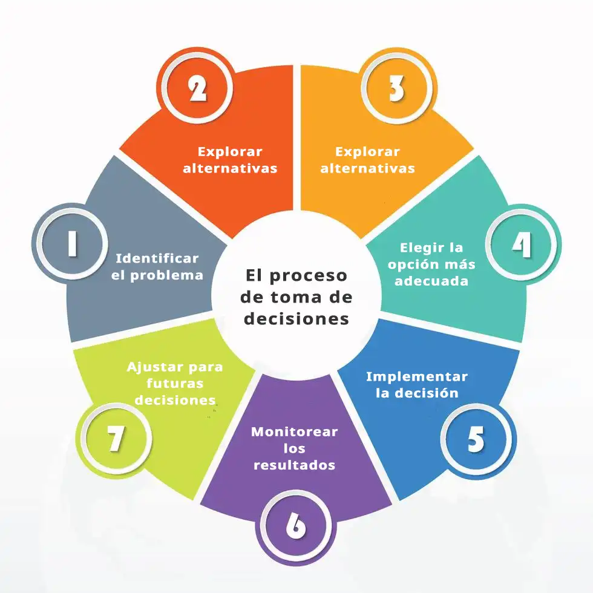

1. Identificación del problema
Consiste en reconocer que existe una necesidad o situación que requiere acción. Herramienta común: análisis de causa raíz como el método de los 5 porqués de Toyota Motor Corporation.
2. Recolección de información
Se recopilan datos internos y externos relevantes. Fuentes comunes: bases de datos, estudios estadísticos o plataformas educativas como Coursera.
3. Generación de alternativas
Se proponen diferentes posibles soluciones. Aquí entra la creatividad. Técnica popular: lluvia de ideas (brainstorming) de Alex Osborn.
4. Evaluación de alternativas
Cada opción se analiza en términos de ventajas, riesgos, costos y beneficios. Apoyo metodológico frecuente: la herramienta de matriz SWOT de Stanford University.
5. Selección de la mejor opción
Se elige la alternativa más adecuada según los criterios definidos. En empresas se guía por principios de eficiencia tipo cost–benefit analysis.
6. Implementación de la decisión
Se ejecuta el plan de acción y se asignan recursos, tiempo y responsables. Herramientas de seguimiento: software de organización como Trello.
7. Monitoreo y evaluación de resultados
Se verifica si la decisión resolvió el problema. Si no, se ajusta o se reinicia el proceso. Indicadores usados comúnmente: KPI metrics.